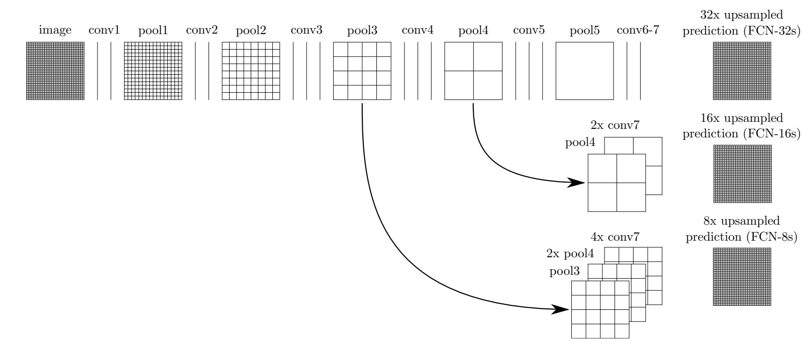
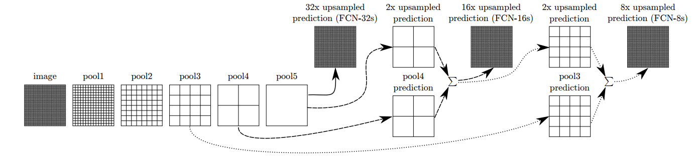
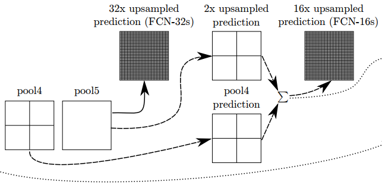
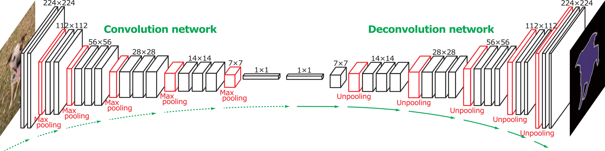
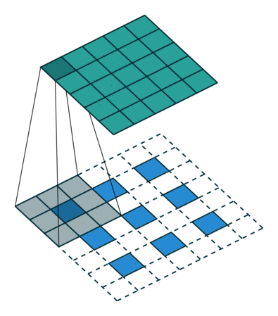
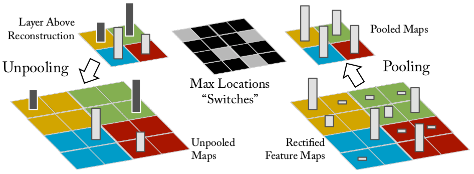
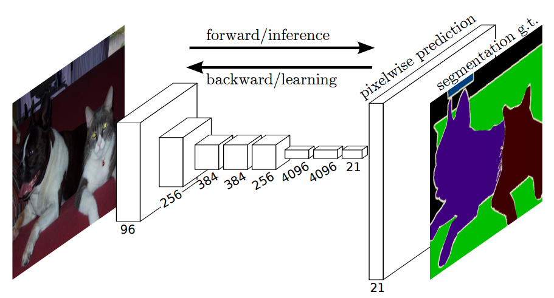

Fully Convolution Network
Before
시작하기에 앞서
What is Segmantation??
사전적인 정의로는 segmantation: 분할, 분할된 부분 입니다만, 여기서는 어떠한 object들에게 각각에 해당하는 색깔을 입혀 이미지에 표시하는 것입니다.
Why we use FCN??
기존의 FC(Fully Connected Layer)는 두가지 문제점이 있었습니다.
- input이 자유롭지 않다, 고정되어있다.
- 비공간적 출력을 만들어낸다, 좌표값에 대한 정보를 없앤다.
이 두가지 문제점을 ‘FC대신 그냥 convolution을 사용하면 어떨까?’란 의문점에서 Fully Convolution Network가 나오게된 것입니다.
FCN
그럼이제 본격적으로 FCN을 알아보도록 합시다.
Arcitecture
이 FCN에서 FC를 Convolution으로 바꾸기는 했지만 궁극적인 목표는 segmentation을 하는 것입니다.
아래 이미지들은 같은 것을 다르게 표현한 것입니다.


어떠한 image가 주어졌을 때 이것이 Network를 통과하며 conv와 pooling을 거쳐나온 feature을 upsampling이란 과정을 통해 다시 image로 복원을 하였을 때 segmentation이 되는 것입니다.
그러면 저기 (FCN-??s)는 뭐죠?
network를 거치며 pooling을 하게되면(stride=2) pooling된 feature의 한점은 원래 이미지에서 2^(stride횟수)의 값을 압축적으로 담게됩니다.
- pool5에서는 한 점당 w/32에 대한 정보를 가지고 있으므로 FCN-32s라고 표기한 것입니다.
- pool4에서는 w/16에 대한 정보를 가지고 있는데, pool5에서 나온 정보를 합칩니다.
- 마찬가지로 pool3에서도 pool4에서 합쳐진 정보를 가지고 다시 합칩니다.
한 네트워크에서 FCN-32s, FCN-16s, FCN-8s을 동시에 만들어내는 것이 아닙니다.segmentation을 하는 방법이 3가지 있는 것입니다.
Upsampling
pooling에서 바로 upsampling을 할 경우에는 Deconvolution을 거쳐 바로 segmentaic 이미지를 만들어 내지만, 이전의 pooling layer와 합칠경우에는 bilinear interpolation을 이용하여 이전의 pooling layer의 feature처럼 크기를 키워줘야 합니다.
bilinear interpolation(양선형 보간법)은 주위의 4점을 가지고 하나의 값을 추정하는 것입니다.
Fuse & Summing
논문에서는 fuse라고 되어 있는 부분은 그냥 upsampling된 layer와 기존에 있던 layer의 feature들을 합하는 것입니다.

위와 같이 pool5를 upsampling해서 이것과 기존의 pool4의 feature를 fuse(합함)합니다. 그 결과를 deconvolution을 거치게 되면 FCN-16s 이미지가 나오게 되는 것이죠. FCN-8s도 이와 같은 방식입니다.
Deconvolution
그러면 위에서 자꾸 언급되는 deconvolution이 무엇이냐 하면 onvolution filter를 거쳐 나온 feature를 다시 원래 이미지로 되돌리는 것입니다.
아래 그림을 참고하세요.

Deconvolution
그러면 이과정에서 어떻게 다시 deconvolution하는 방법은 아래와 같이 convolution을 할때 사용했던 filter(kernel)을 그대로 다시사용하는 것 입니다.

Unpooling
deconvolution을 하는 과정에서 보면 unpooling이라는 단어가 나오는데요. 이 unpooling도 사실보면 간단합니다. pooling을 할때 가장 큰 값을 추출했던 max location을 기억하여 unpooling을 할때 max location에는 값을 되돌려놓고 나머지는 0으로 채우는 것이죠.

Segmentation
그러면 ‘deconv 한 결과를 어떻게 segmentation하는가??’ 가 문제겠죠.

deconv를 거치면 위의 그림과 같이 depth가 21인 deconv ouptut이 나오게 됩니다. 여기서 하나의 output filter는 해당하는 class에 대한 값을 가지고 있는 것이죠.
그래서 각각의 filter에 대해 softmax를 하게되면 한 pixel(output의 한점)에서 가장 큰 값이 그 pixel에 해당하는 object가 segmentation 되는 것이죠. 그래서 FCN은 softmax loss를 사용합니다.